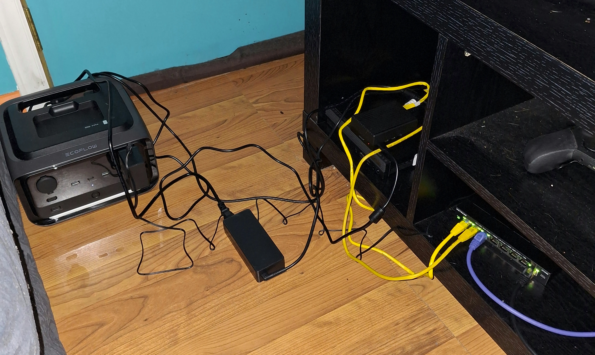

- Wesley Nikee Holder
- Home Project Archive
-
Resume

I build high-level and low-level systems combining hardware meets software. From Verilog Finite State Machines to a Home Server, I love designing custom systems no matter the size. Check out some of my skills below!


The objective of this project was to engineer an optimized, multi-input Vending Machine FSM that could be demonstrated on a breadboard and in Verilog. The Verilog FSM is slightly different than the breadboard FSM in order to produce a cleaner waveform graph, however the inputs and outputs are the same for both.

The objective of this project was to implement a program that would determine the "greatest" game on Steam in 2021 based on a formula of weighted criteria that the program would get by extracting the needed files from a .zip folder, then parsing a .csv file for the calculation data, then parsing the same .csv again for other stats, before finally parsing a .JSON file for more stats to display on the final readout. (For anyone interested, the "greatest" game on Steam in 2021 is PUBG, based on the weighted calculations) This program utilizes linked list traversal, multi-file I/O, and multi-file parsing.


The objective of this project is to create a custom device ecosystem to self-host various services and deliver them to my devices (and most importantly, having fun doing it). Using Proxmox VE as my base, I host various Virtual Machines with various services (such as Nextcloud, Pihole, Home Assistant, etc.) and can access them from anywhere using Tailscale.
Growing up, I was always interested in computers and how they worked. I distinctly remember attending a Raspberry Pi camp when I was young and absolutley loving what I got to do. Due to financial constraints, I wasn't able to really reignite my passion for computers until my later high school years after I had a job for awhile. Using pre-owned hardware from eBay, I was able to start and complete various projects, such as my Ender-3 3D Printer and my current homelab server. When I'm not working on my projects, my other hobbies that enjoy doing are personal fitness, gaming, and fishing.